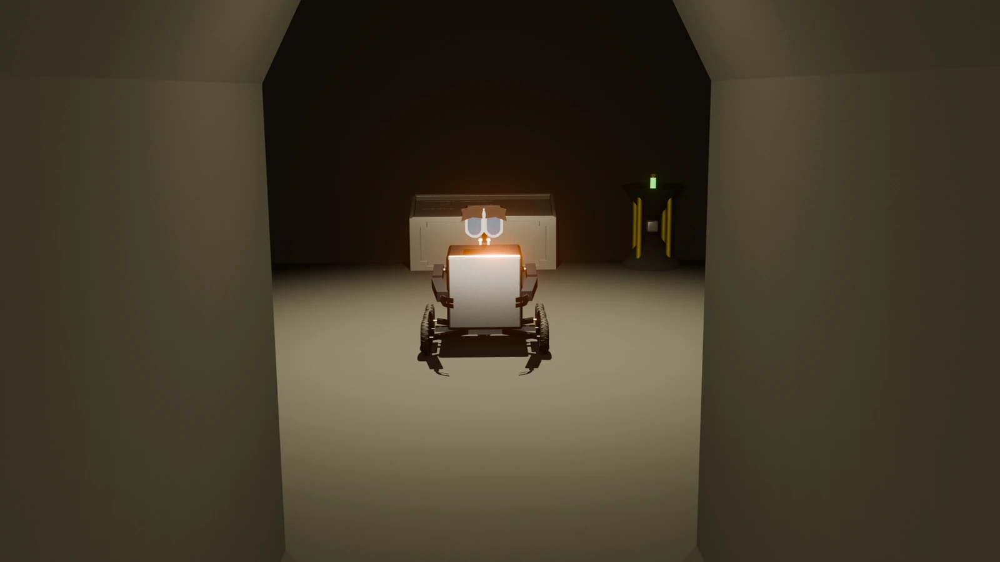
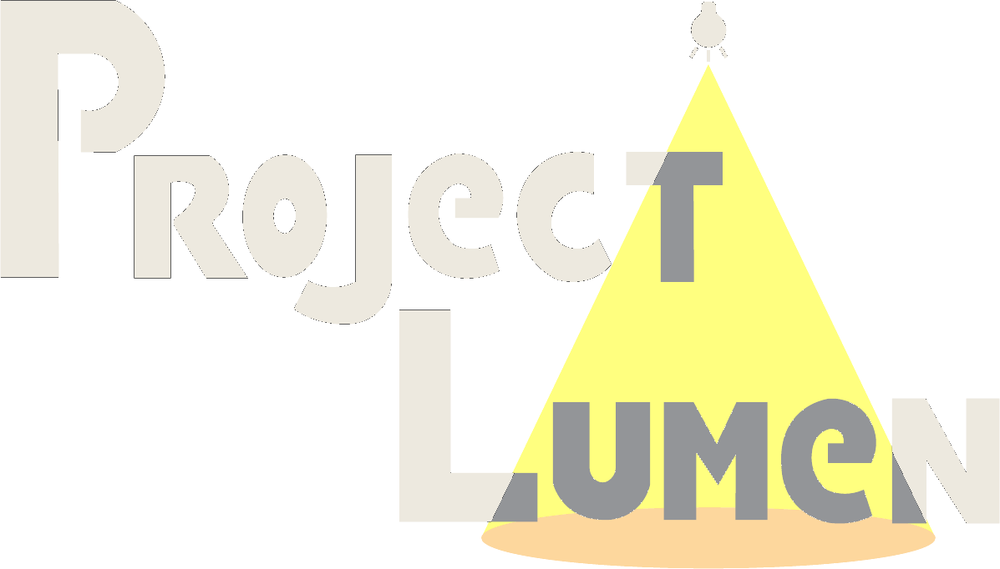

The trailer is the one part made with generative AI video: I directed it from my own designs and prompts, then edited it and added music and sound effects. Everything else, the character, the labs and the playable prototype, I built myself in Blender and Unity.

3D game concept · Blender + Unity · Solo project

The last robot on Earth, a collapsing underground lab, and one flask of human DNA.
Move to shine the light ◐
- Where
- IADE · Integrated Project III
- Role
- Solo, end to end
- When
- 2026
- Tools
- Blender · Unity · AI video
00 · Trailer
- Embark on this adventure
- To find the answer
- To save humanity
01 · Story
The year is 2172
Humanity is gone. Not because of a meteor or an alien invasion, but because of its own neglect of the planet. In its last years, scientists moved everyone they considered "useful" into secret underground labs and started Project Lumen: a flask holding everything needed to bring human life back.
They sent a distress signal into space and waited. The resources ran out before an answer came, so they built an AI to guard the flask: Lumen, a small robot.
Decades later, a distant radio signal reaches the lab. It's the answer to that old call for help. Lumen's systems reboot. She is alone in an overgrown, collapsing lab, with one task: reach the flask and get it to the extraction point in time.
02 · Character
Meet Lumen
A compact robot built for utility in a post-apocalyptic world. You play as her, and the whole game is about bringing her back to full strength.
Headlights 3 → 5 m
She starts with one working eye-light. Two upgrades add a second light and then LEDs, a metre of vision each.
Wheels 60 → 100%
Four of six wheels at the start. Each missing wheel you find adds 20% speed.
Torch arm Repair
Broken when you wake up. Fixing it with spare parts unlocks every other upgrade and opens locked doors.
03 · World
The labs
Modelled in Blender and assembled in Unity: worn-down laboratories where nature has started to take over and ceilings are caving in. Some machines still work, but light is extremely scarce, and so are the ways out.
04 · Gameplay & interface
Explore, don't fight
A first-person, 3D exploration game with no combat. Puzzles test memory and patience. You manage battery light and torch gas, hunt for upgrades, and find audio tapes, photos and documents that tell what happened. It's made for players over 16 who enjoy slow, story-driven games.
WASD move
Scroll switch arm
I inventory
Space jump, she can't
05 · Identity
One bulb of hope
"Project" is the kind of word military programmes use for top-secret work, which fits the story. "Lumen" is Latin for light, and also the unit for measuring brightness.
The logo is dark lettering lit by a single bulb. It's lonely, but the one light is enough to give hope, or at least make you curious about where it leads.
Deliverables
- Concept book: story, gameplay, specs, audience
- 3D character and environment models and renders (Blender)
- Playable prototype (Unity)
- UI sketches and in-game interface
- Logo and game poster
- AI-generated trailer, edited with music and sound
- Narrated presentation defending the design